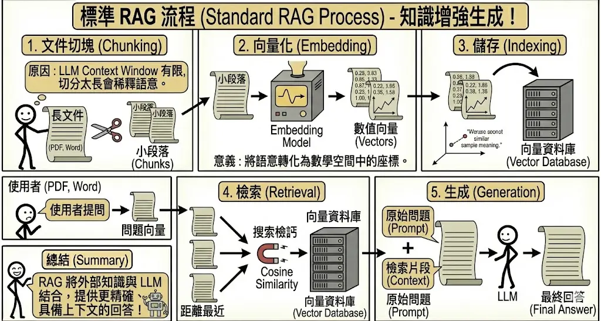
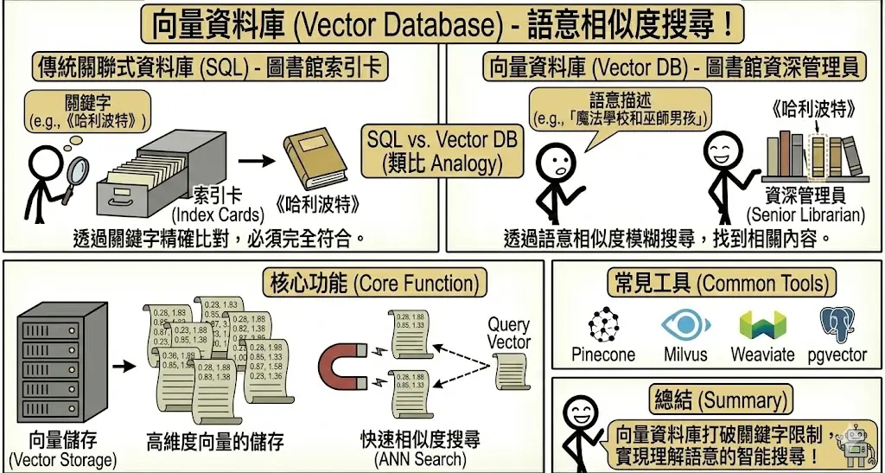
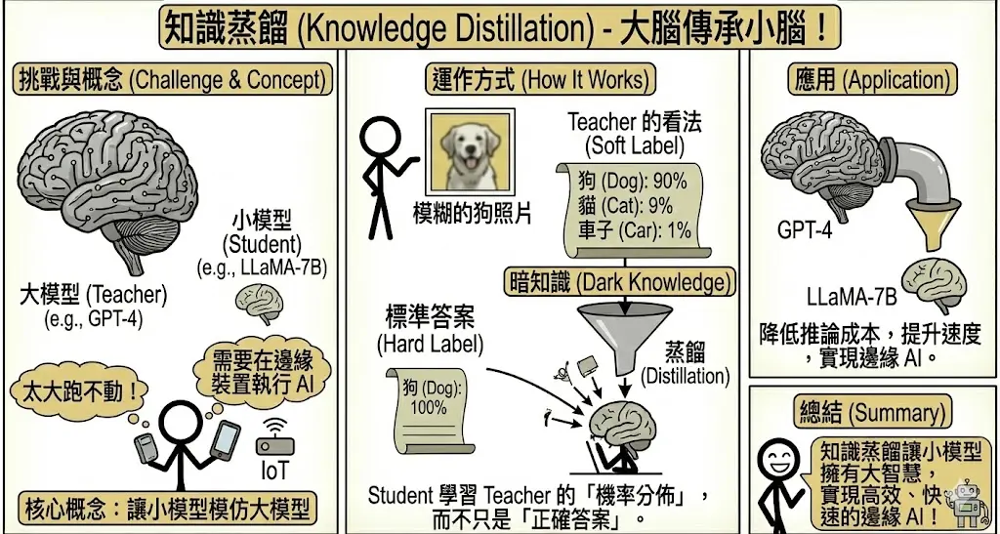
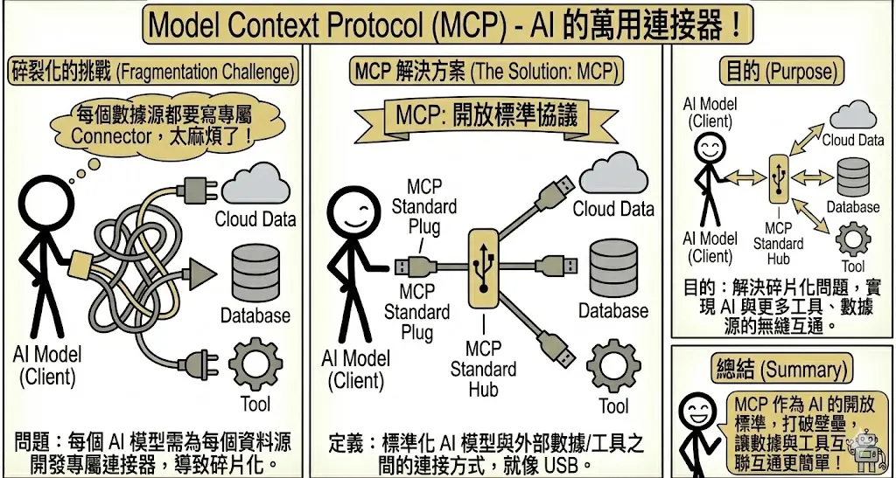

進階 RAG 與系統架構 (Advanced RAG & Architecture)
考點摘要：解決 AI 幻覺與時效性問題的主流架構，考題常涉及 RAG 與 Fine-tuning 的選擇決策。
RAG 運作原理與架構
檢索增強生成 (Retrieval-Augmented Generation, RAG) 是目前企業落地生成式 AI 最關鍵的技術架構。
1. 標準 RAG 流程
RAG 的運作可以分為五個標準步驟：
- 文件切塊 (Chunking)：將長文件（PDF, Word）切成小的段落 (Chunks)。
- 原因：LLM 的 Context Window 有限，且切分太長會稀釋語意。
- 向量化 (Embedding)：使用 Embedding Model 將文字轉換為數值向量 (Vectors)。
- 意義：將語意轉化為數學空間中的座標。意思相近的句子，座標會靠得很近。
- 儲存 (Indexing)：將向量存入向量資料庫 (Vector Database)。
- 檢索 (Retrieval)：
- 當使用者提問時，將問題也轉換為向量。
- 在資料庫中搜尋與問題向量「距離最近」的片段 (Cosine Similarity)。
- 生成 (Generation)：將檢索到的片段 (Context) 與原始問題 (Prompt) 一起餵給 LLM，生成最終回答。

2. 向量資料庫 (Vector Database)
不同於傳統關聯式資料庫 (SQL) 透過關鍵字精確比對，向量資料庫透過「語意相似度」進行模糊搜尋。
- 核心功能：高維度向量的儲存與快速相似度搜尋 (ANN Search)。
- 常見工具：Pinecone, Milvus, Chroma, Weaviate, pgvector。
- 類比：
- SQL：圖書館的索引卡系統。你要找《哈利波特》，必須輸入精確書名。
- Vector DB：圖書館的資深管理員。你說「我想找一本關於魔法學校和巫師男孩的書」，他就能帶你找到《哈利波特》，即使你沒提到書名。

模型微調 (Fine-tuning) 與優化
在企業導入生成式 AI 時，最常面臨的抉擇就是：該用 RAG 還是 Fine-tuning？
1. RAG vs. Fine-tuning 決策矩陣
這兩者並非互斥，而是互補。我們可以將它們比喻為：
- RAG (檢索增強生成)：像是開書考。模型本身不需要背誦知識，考試時翻閱教科書（向量資料庫）即可。
- Fine-tuning (微調)：像是考前衝刺班。透過大量練習，將知識內化到大腦（權重）中，並學習特定的答題技巧。
| 比較項目 | RAG (檢索增強生成) | Fine-tuning (模型微調) |
|---|---|---|
| 知識時效性 | 高。資料庫更新，AI 就知道新知識（即時）。 | 低。需要重新訓練才能學到新知識（週期長）。 |
| 幻覺風險 | 低。回答有憑有據 (Grounded)，可附上引用來源。 | 中。模型仍可能一本正經胡說八道，且難以查證來源。 |
| 資料隱私 | 高。可透過權限控管 (ACL) 決定誰能檢索到什麼文件。 | 低。一旦寫入模型權重，就很難限制特定人存取特定知識。 |
| 適用場景 | 企業知識庫、法規查詢、即時新聞分析。 | 學習特定語氣/風格、醫療/法律專有名詞理解、固定格式輸出 (JSON/SQL)。 |
| 成本 | 建置向量資料庫、檢索運算成本。 | 訓練算力成本、資料標註成本。 |
最佳實務：通常建議先 RAG，後 Fine-tuning。先用 RAG 解決知識獲取問題，如果發現模型聽不懂專業術語或語氣不對，再考慮 Fine-tuning。
2. 進階 RAG 技術 (Advanced RAG)
為了提升檢索的準確度，除了標準流程外，還有許多優化技巧：
- 混合搜尋 (Hybrid Search)：
- 同時使用 關鍵字搜尋 (Keyword Search/BM25) 與 向量搜尋 (Vector Search)。
- 優點：結合了關鍵字的精準度（如專有名詞、型號）與向量的語意理解能力。
- 重排序 (Re-ranking)：
- 先檢索出較多候選片段 (Top-50)，再用一個精準的 Cross-Encoder 模型對這 50 個片段進行詳細評分與排序，最後只取 Top-5 給 LLM。
- 類比：海選 (Retrieval) 先撈一堆人，決賽 (Re-ranking) 再由評審仔細打分。
- 查詢轉換 (Query Transformation)：
- LLM 在檢索前先改寫使用者的問題。
- 例子：使用者問「它好用嗎？」，LLM 改寫為「iPhone 15 Pro 的電池續航力與相機效能評價如何？」，再進行檢索。
3. 知識蒸餾 (Knowledge Distillation)
當我們希望在邊緣裝置（手機、IoT）上執行 AI，但大模型 (Teacher) 太大跑不動時，就需要用到知識蒸餾。
核心概念：讓一個參數少、運算快的小模型 (Student)，去模仿大模型 (Teacher) 的行為。
運作方式：
- Student 不只是學習「正確答案」(Hard Label)，更要學習 Teacher 的「機率分佈」(Soft Label)。
- 例子：分辨一張模糊的狗照片。
- 標準答案：狗 (100%)。
- Teacher 看法：狗 (90%)、貓 (9%)、車子 (1%)。
- Teacher 傳遞出的「這張圖有點像貓」的資訊 (Dark Knowledge)，能幫助 Student 學得更好。
應用：將 GPT-4 的能力蒸餾到 LLaMA-7B 或更小的模型中，以降低推論成本並提升速度。

Model Context Protocol (MCP)
隨著 AI 應用越來越複雜，我們需要讓 AI 連接更多的工具與資料源。MCP 應運而生。
1. 定義與目的
- 定義：MCP 是一個開放標準協議，旨在標準化 AI 模型 (Client) 與外部數據/工具 (Server) 之間的連接方式。
- 目的：解決「每個 AI 模型都要為每個資料源寫一個專屬 Connector」的碎片化問題。
- 類比：
- USB-C：以前手機、電腦、相機各有各的充電線。現在一條 USB-C 線就能連接所有裝置。MCP 就是 AI 界的 USB-C。
- 驅動程式 (Driver)：作業系統不需要知道每台印表機的硬體細節，只要安裝對應的驅動程式即可溝通。MCP Server 就是資料源的驅動程式。
2. 核心架構 (Architecture)
MCP 採用 Client-Host-Server 架構：
- MCP Host (主機)：執行 AI 模型的應用程式，例如 Claude Desktop App, IDE (VS Code, Cursor), 或 AI Agent 平台。它負責管理連線與權限。
- MCP Client (客戶端)：在 Host 內部運作的元件，負責與 Server 溝通（通常是一對一或一對多）。
- MCP Server (伺服器)：提供特定功能的輕量級服務。它不執行 LLM，而是專注於提供上下文 (Context) 或 能力 (Capabilities)。
- 例子：Google Drive Server (讀取檔案)、PostgreSQL Server (查詢資料)、Slack Server (發送訊息)。
3. 三大核心原語 (Primitives)
MCP 定義了三種主要的互動模式：
- 資源 (Resources)：
- 概念：類似檔案讀取。Server 提供被動的數據供 Client 讀取。
- 例子：讀取日誌檔 (Logs)、查看資料庫 Schema、獲取 API 文件。
- 特性：唯讀 (Read-only)、可訂閱 (Subscribable)（當資源更新時通知 Client）。
- 提示 (Prompts)：
- 概念：Server 提供預先寫好的 Prompt Template，讓使用者或 Client 直接調用。
- 例子：
git-commit-prompt(自動生成 commit message)、explain-code-prompt(解釋程式碼)。 - 優點：將 Prompt Engineering 的專業知識封裝在 Server 中，使用者無需從頭下指令。
- 工具 (Tools)：
- 概念：類似函數呼叫 (Function Calling)。Client 可以要求 Server 執行某個動作。
- 例子：
execute_sql_query(執行 SQL)、send_email(寄信)、create_jira_ticket(開票)。 - 特性：可執行 (Executable)、通常需要使用者授權 (Human-in-the-loop)。

4. MCP 與 RAG 的差異
| 特性 | RAG (檢索增強生成) | MCP (模型上下文協議) |
|---|---|---|
| 主要目標 | 獲取知識。解決 AI 知識不足與幻覺問題。 | 連接萬物。解決 AI 與外部系統整合的標準化問題。 |
| 運作方式 | 切塊 → 向量化 → 檢索 → 生成。 | Client <→ Server 透過標準協議溝通 (JSON-RPC)。 |
| 資料型態 | 主要是非結構化文字 (PDF, Wiki)。 | 包含結構化資料 (DB)、即時狀態 (Logs)、操作能力 (Tools)。 |
| 關係 | RAG 是 AI 的一種能力。 | MCP 是實現 RAG 的一種管道 (例如透過 MCP 連接向量資料庫)。 |